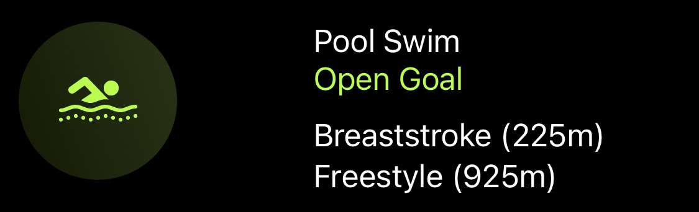

Sep 25, 2021 ⋅ 1 min read
One year of learning to swim freestyle
It’s been a year now since I started learning to swim freestyle. At that time I couldn’t even do two strokes before I started having panic attacks and needed a break to breathe. I started a four-week swimming course and by the end of the course I could swim a 25-metres lane, which was an incredible achievement for me (see tweet).
Then, the second COVID wave hit Germany hard and all the swimming pools were closed for almost half a year.
When I was able to go swimming again this summer, it felt almost like it did when I first started. I definitely couldn’t swim 25 metres anymore (and in the outdoor pool I even had a longer 50-metres lane). It took me many hours of watching tutorials on proper technique and trying again and again and again until I could finally see small progress after some weeks! And somehow I finally could crawl a 50-metres lane! That was an incredible feeling! It actually motivated me so much that I didn’t want to do anything else but swim all day 😅
Now that the outdoor pool season is over again, I went swimming yesterday for the first time in a year in the same indoor pool where I also had my swimming class last year. And you know what? The shorter 25-metres lane helps me so much to just get a liiiiittle break to breathe, so I almost crawled ONE kilometer in half an hour!
Definitely the best feeling ever! #NeverGiveUp
I can’t wait to go swimming again!